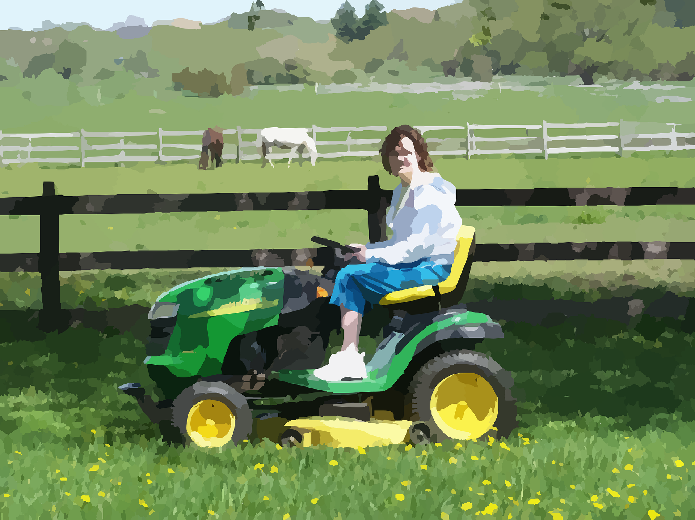
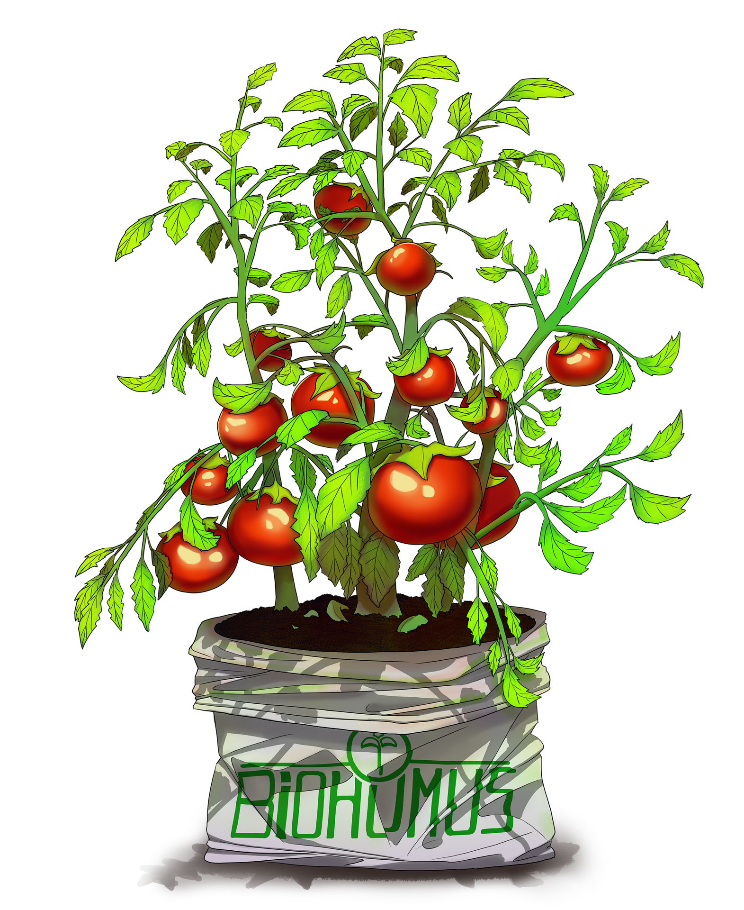
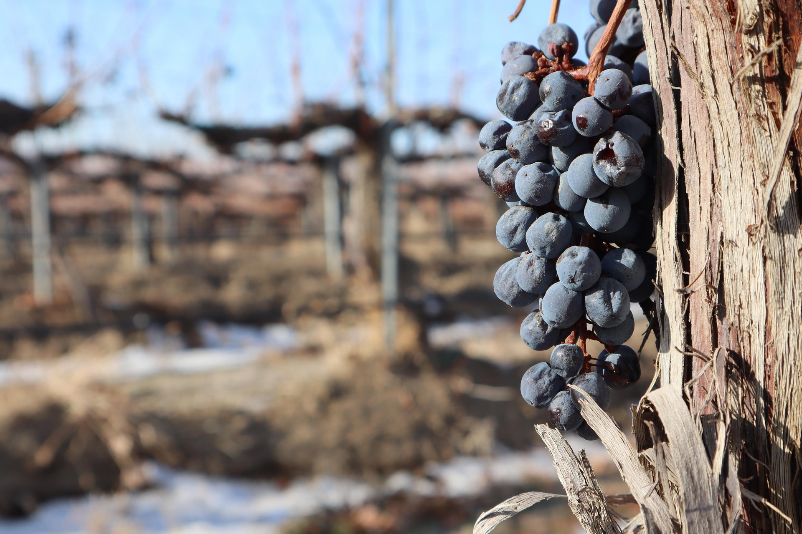
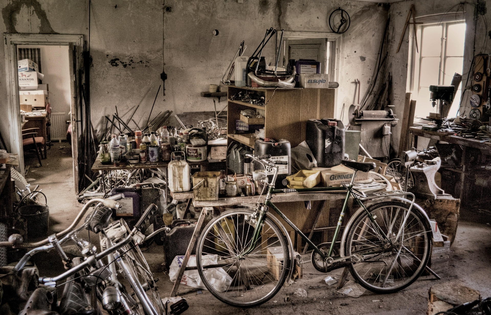

Macchine agricole
Vendita, manutenzione e riparazione di macchine agricole con assistenza qualificata.
Vendita e Assistenza
Da anni al servizio di professionisti e privati con competenza, ricambi e supporto rapido su macchine agricole, attrezzature da giardino e biciclette.

Vendita, manutenzione e riparazione di macchine agricole con assistenza qualificata.

Soluzioni per la cura del verde: vendita, interventi tecnici e ricambi.

Concimi, accessori e forniture selezionate per professionisti e appassionati.

Fertilizzanti e prodotti specifici per nutrizione e cura di orto, giardino e colture.

Attrezzature e materiali dedicati alle lavorazioni in vigneto e alla manutenzione stagionale.

Servizi di riparazione e messa a punto per bici da città, trekking e tempo libero.
 BCS
Macchine agricole e attrezzature professionali
BCS
Macchine agricole e attrezzature professionali
 Husqvarna
Soluzioni per giardino, forestale e cura del verde
Husqvarna
Soluzioni per giardino, forestale e cura del verde
 Eurosystems
Attrezzature per giardinaggio e piccola agricoltura
Eurosystems
Attrezzature per giardinaggio e piccola agricoltura
 SEP
Macchine per piccola agricoltura e manutenzione del verde
SEP
Macchine per piccola agricoltura e manutenzione del verde
 Volpi
Pompe, sprayer e strumenti per agricoltura e verde
Volpi
Pompe, sprayer e strumenti per agricoltura e verde
 BlueBird
Macchine e utensili per manutenzione del verde
BlueBird
Macchine e utensili per manutenzione del verde
GALOTTA SILVIO (DITTA INDIVIDUALE) opera a Pietragalla offrendo un servizio affidabile e orientato alle esigenze del territorio.
Competenza tecnica, attenzione al cliente e disponibilita di prodotti e ricambi sono i valori che guidano ogni intervento.
Partita IVA: IT01390810768
Contrada Crocevia 70, 85016 Pietragalla (PZ)